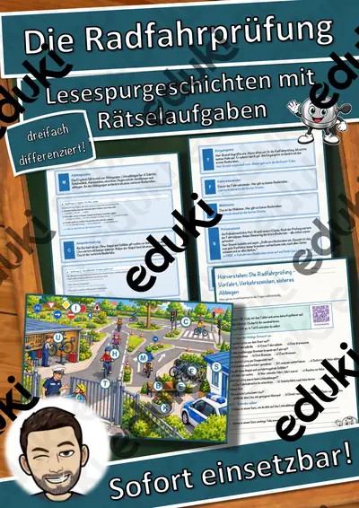
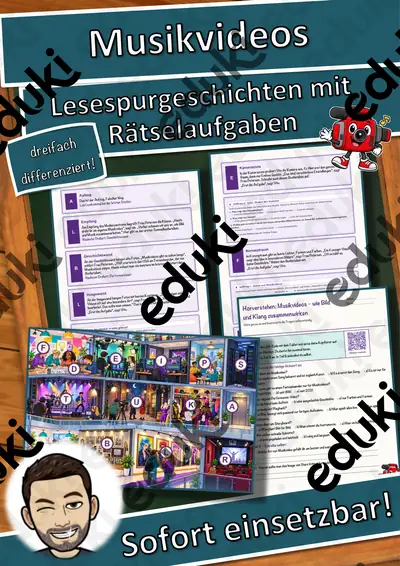
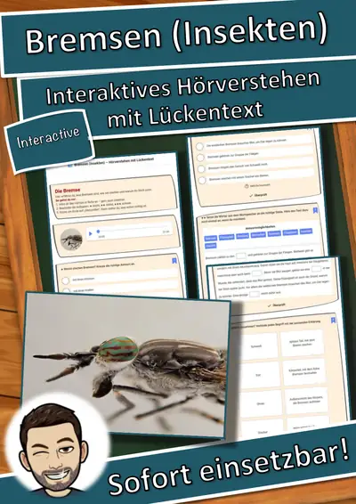

Das Fahrrad – Lesespurgeschichte mit Rätselaufgaben (Klasse 4)
Begib dich mit deiner Klasse auf eine spannende Lesespur rund um das Fahrrad! Die Kinder erkunden mit dem Fahrradexperten Herrn Rad die wichtigsten Teile eines Fahrrads – vom Lenker über Sattel, Pedale und Kette bis zur Bremse und den Reifen. Ganz nebenbei lernen sie, wie die Teile zusammenwirken und was für sicheres Radfahren wichtig ist. Am Ende jedes Abschnitts verrät ein Hinweis den nächsten Ort (ein Fahrradteil) auf dem Fahrrad-Plan – nur wer richtig liest und mitdenkt, findet den Weg und sammelt alle geheimen Buchstaben zum Lösungswort.
Diese Lesespurgeschichte verbindet motivierendes, sinnentnehmendes Lesen mit echtem Sachwissen über das Fahrrad und schult zugleich das genaue Arbeiten. Das Material ist SOFORT EINSETZBAR und in DREI DIFFERENZIERUNGSSTUFEN (leicht ★ / mittel ★★ / schwer ★★★) angelegt, sodass alle Kinder einer Klasse am selben Thema arbeiten können.WICHTIG: Das komplette Material ist sowohl in FARBE als auch in SCHWARZ-WEISS enthalten – ideal zum Sparen von Druckkosten.DAS IST ENTHALTEN
- Lesespurgeschichte in 3 Niveaus (leicht, mittel, schwer)
- farbiger Fahrrad-Plan als Suchkarte
- Hörverstehen mit QR-Code zur MP3 (Kinder hören selbstständig mit Kopfhörern)
- vier Aufträge auf dem Weg: ein Verbinde-Rätsel, ein Fahrrad-Quiz, eine Rechenaufgabe und ein Steckbrief
- Rätselseite (Wörter-Suchsel + Wissensfragen)
- Ausmalbild zum Thema
- ausführliches Lösungsblatt für die Lehrkraft
- alles zusätzlich als komplette Schwarz-Weiß-VarianteSO FUNKTIONIERT DIE LESESPURDie Kinder lesen ab START, entnehmen dem Text einen Hinweis auf einen Ort (ein Fahrradteil), suchen ihn auf dem Plan und lesen bei dieser Station weiter. An jeder richtigen Station gibt es einen Sammelbuchstaben. Eingebaute Sackgassen (Auto, Baum, Laterne, Vogel) dienen der Selbstkontrolle und machen deutlich, dass diese zwar zur Straße gehören, aber kein Teil des Fahrrads sind. Am Ende werden die gesammelten Buchstaben umgestellt und ergeben ein geheimes Lösungswort. (Die Lösungen sind selbstverständlich nur im Lösungsblatt für die Lehrkraft enthalten.)INHALTLICHER SCHWERPUNKTAufbau und Funktion des Fahrrads: der Lenker zum Steuern, der Sattel zum Sitzen, die Pedale zum Antreiben, die Kette zur Kraftübertragung auf das Hinterrad, die Bremse zum sicheren Anhalten und die luftgefüllten Reifen. Dazu das Zusammenwirken der Teile und die Bedeutung von Bremse, Licht und Helm für die Sicherheit im Straßenverkehr. Zur Abgrenzung werden Dinge aus der Straßenumgebung behandelt. Das Material stellt die Zusammenhänge sachlich und kindgerecht dar.ABGEDECKTER LEHRPLAN (Klasse 4)
- Sachunterricht/Technik – Das Fahrrad: Teile des Fahrrads und ihre Aufgaben, Kraftübertragung über Pedale und Kette, verkehrssicheres Fahrrad, Sicherheit im Straßenverkehr (Verkehrserziehung).
- Deutsch – Lesen mit Texten und Medien umgehen: Lesestrategien anwenden, Texten gezielt Informationen entnehmen, sinnentnehmend und selektiv lesen; Selbstkontrolle und Lesemotivation durch die Lesespur; Zuhören: einem Sachhörtext konzentriert folgen und Wesentliches entnehmen (Hörverstehen mit MP3).
- Mathematik – Rechnen im Sachzusammenhang (Zahlen rund um Fahrräder und Fahrradtouren).
- Fächerübergreifend / Kompetenzen: technisches Grundverständnis, Verkehrssicherheit und Selbstständigkeit, genaues Lesen und Prüfen, Konzentration und Ausdauer, kreatives Gestalten (Ausmalbild).
Geeignet für Freiarbeit, Stationenlernen, Vertretungsstunden, Wochenplan und Homeschooling. Klassenstufe 4 (differenziert einsetzbar auch in angrenzenden Jahrgangsstufen).
Ähnliche Materialien

Fahrrad – Hörverstehen mit Lückentext (interaktiv)

Fahrrad Lückentext mit Wortspeicher Hörverstehen und Suchsel

Die Radfahrprüfung – Vorfahrt, Verkehrszeichen, sicheres Abbiegen – Lesespurgeschichte mit Rätselaufgaben (Klasse 4)

Bremse (Technik) Lückentext mit Wortspeicher Hörverstehen und Suchsel

Winterzeit-Spiele: Winter-Domino: Die Bild-Wort-Kette – Klasse 1–4

Musikvideos – wie Bild und Klang zusammenwirken – Lesespurgeschichte mit Rätselaufgaben (Klasse 9)

Weben am Webrahmen – Kette, Schuss und Muster – Lesespurgeschichte mit Rätselaufgaben (Klasse 3)
